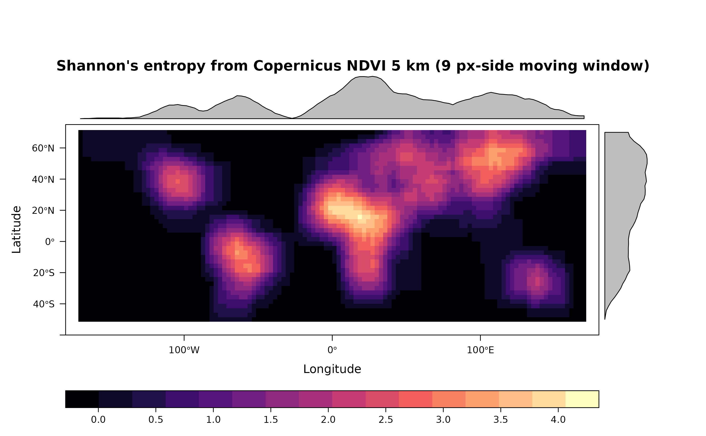
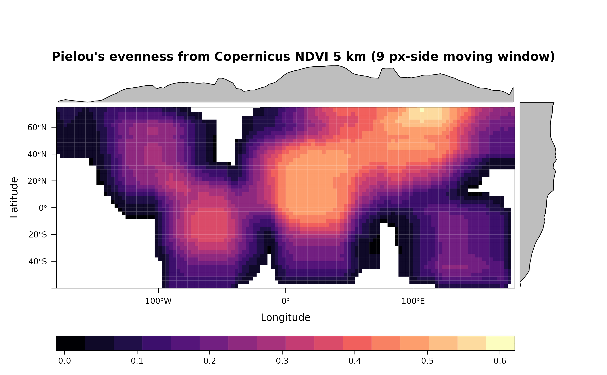
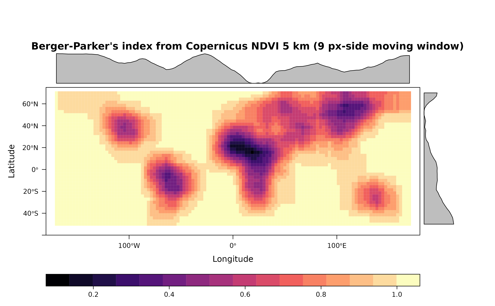
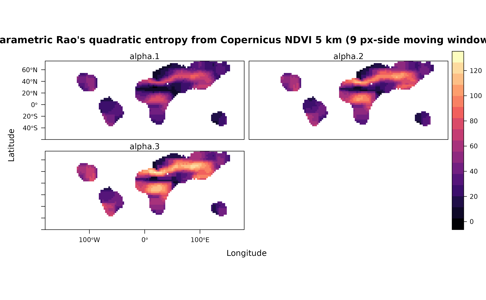
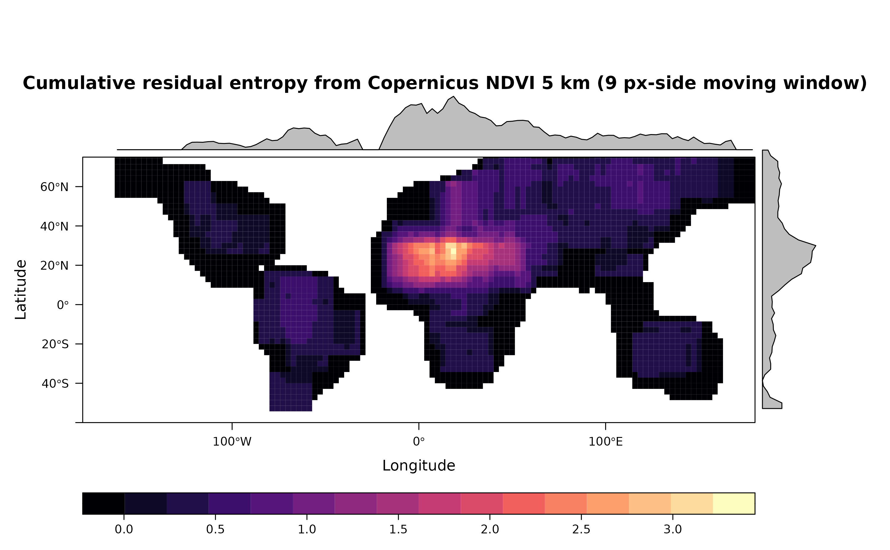
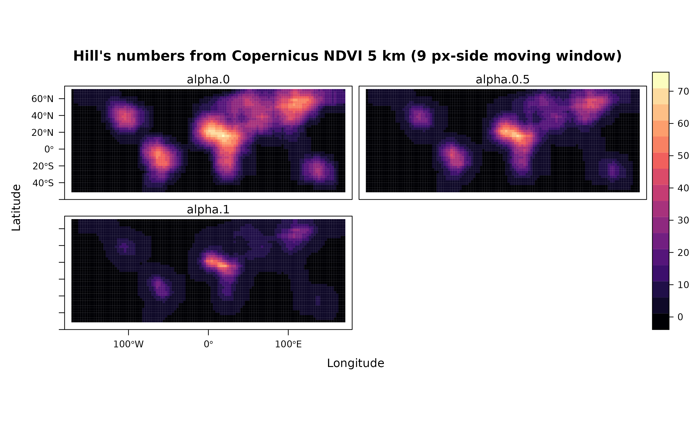
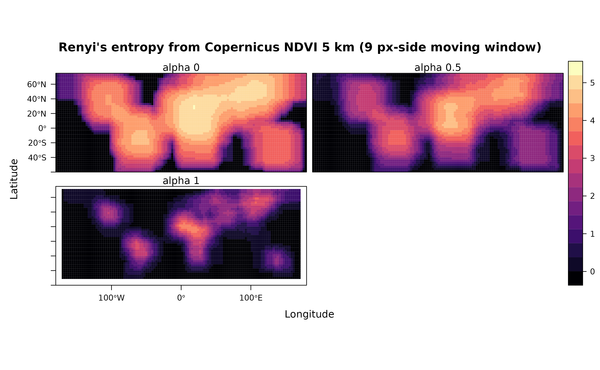

Indices of diversity from NDVI.
Matteo Marcantonio, Duccio Rocchini
2024-03-05
Source:vignettes/rasterdiv_01_Basics.Rmd
rasterdiv_01_Basics.RmdThis vignette uses rasterdiv to build global series of indices of diversity based on Information Theory. The input dataset is the Copernicus Long-term (1999-2017) average Normalised Difference Vegetation Index for the 21st of June (copNDVI).
copNDVI <- load_copNDVI()Overview
A SpatRaster called copNDVI is loaded together with the package
rasterdiv. copNDVI is a 8-bit raster, meaning
that pixel values range from 0 to 255. You could stretch it to
match a more familiar (-1,1) values range using
terra::stretch(copNDVI,minv=-1,maxv=1). The original
dataset was resampled to 1/20th its spatial resolution and pixels with
values 253, 254 and 255 (water) were set as NA’s.
#Resample using terra::aggregate and a linear factor of 10
copNDVI <- terra::aggregate(copNDVI, fact=20)Compute all indexes in rasterdiv on copNDVI
rasterdiv allows the computation of 8 diversity
indexes based on information theory. In the following section, all these
indexes will be computed for copNDVI using a moving window of
81 pixels (9 px side). Alpha values for the Hill, Rényi and parametric
Rao indexes will be set from 0 to 2 every 0.5. In addition, we will set
na.tolerance=0.2, meaning that all moving windows with more
than 10% of pixels equal NA will be set to NA.
#Shannon's Diversity
sha <- Shannon(copNDVI,window=9,na.tolerance=0.2,np=1)
#Pielou's Evenness
pie <- Pielou(copNDVI,window=9,na.tolerance=0.2,np=1)
#Berger-Parker's Index
ber <- BergerParker(copNDVI,window=9, na.tolerance=0.2, np=1)
#Parametric Rao's quadratic entropy with alpha ranging from 1 to 3
prao <- paRao(copNDVI, window=9, alpha=c(1:3), na.tolerance=0.8, dist_m="euclidean", np=1)
#Cumulative residual entropy
cre <- CRE(copNDVI, window=9, na.tolerance=1, np=1, simplify=0)
#Hill's numbers
hil <- Hill(copNDVI, window=9, alpha=seq(0,1,0.5), na.tolerance=0.2, np=1)
#Rényi's Index
ren <- Renyi(copNDVI, window=9, alpha=seq(0,1,0.5), na.tolerance=0.2, np=1)Visualise output SpatRasters (the shape of continents
is deformed by the NAs in the 9x9 moving windows)
#Shannon's Diversity
levelplot(sha, main="Shannon's entropy from Copernicus NDVI 5 km (9 px-side moving window)", as.table = T,layout=c(0,1,1), ylim=c(-60,75), margin = list(draw = TRUE))
#Pielou's Evenness
levelplot(pie, main="Pielou's evenness from Copernicus NDVI 5 km (9 px-side moving window)", as.table = T, layout=c(0,1,1), ylim=c(-60,75), margin = list(draw = TRUE))
#Berger-Parker' Index
levelplot(ber, main="Berger-Parker's index from Copernicus NDVI 5 km (9 px-side moving window)", as.table = T, layout=c(0,1,1), ylim=c(-60,75), margin = list(draw = TRUE))
#Parametric Rao's quadratic Entropy
levelplot(rast(prao[[1]]), main="Parametric Rao's quadratic entropy from Copernicus NDVI 5 km (9 px-side moving window)", as.table = T,layout=c(0,3,1), ylim=c(-60,75), margin = list(draw = TRUE))
#Cumulative residual entropy
levelplot(cre, main="Cumulative residual entropy from Copernicus NDVI 5 km (9 px-side moving window)", as.table = T, layout=c(0,1,1), ylim=c(-60,75), margin = list(draw = TRUE))
#Hill's numbers (alpha=0, 0.5 and 1)
levelplot(terra::rast(hil), main="Hill's numbers from Copernicus NDVI 5 km (9 px-side moving window)", as.table = T, layout=c(0,3,1), ylim=c(-60,75))
#Renyi' Index (alpha=0, 0.5 and 1)
levelplot(terra::rast(ren), main="Renyi's entropy from Copernicus NDVI 5 km (9 px-side moving window)", as.table = T,layout=c(0,3,1), names.attr=paste("alpha",seq(0,1,0.5),sep=" "), ylim=c(-60,75), margin = list(draw = FALSE))